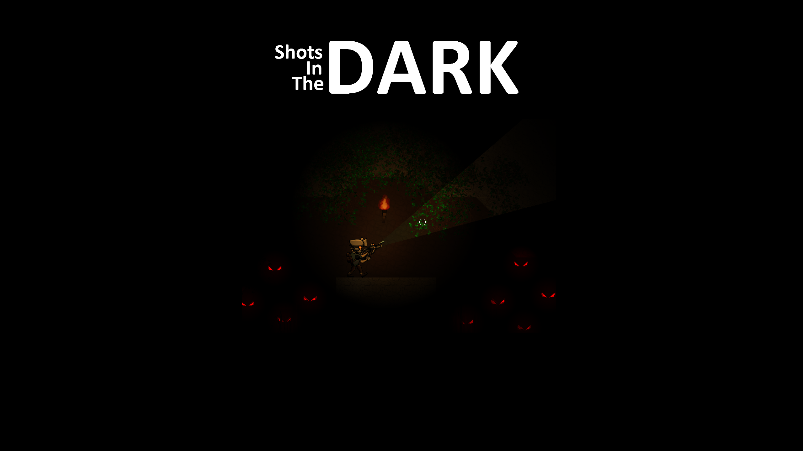

Redesigning a Videogame Interface
Usability Testing | Interpretting the Results | User Interface Changes
Background:
My roommate and I built a 2D Platformer/Shooter called Shots in the Dark while we were in college. Shots in the Dark is a game about exploring dark dungeons, shooting monsters with a variety of guns, and getting loot. We were able to work off feedback from our Beta players, but we didn't feel that the feedback we got was as valuable as data we could collect from usability tests. We knew that people sometimes got frustrated with the game, that they struggled with the user interface, and that play sessions were running shorter than intended because they would get tired or bored. We wanted to figure out where those issues were coming from by observing people playing the game.
Usability Testing:
We sat down with different players one-on-one and asked them to play through the game. We encouraged them to vocalize anything they felt while they played. We let them know ahead of time that we would not be answering questions of helping them through the game -- we were just there to take notes about their play session so we could better understand how people played the game.
By repeating this process for a dozen players, we were able to glean patterns in player behavior that we hadn't noticed before. The recurring behaviors we saw are as follows:
- Players could hoard a select few weapons and not use any others for the whole game.
- Players spent too much time in the inventory selecting and organizing their items.
- Players got lost easilly and missed items that were located toward the top of the screen.
- Players did not read the tutorial text.
- Players did not know when they were out of ammo.
- Players did not understand the nuances of the inventory system.
- Players frequently switched to the wrong item accidentally during combat.
These behaviors aren't the player's fault. They were just symptoms of the problems with the user interface and the controls of the game. The next step was to figure out the root problems that were causing these behaviors.
Interpretting the Results:
Almost all of the issues we saw during playtesting tied back to the design of the inventory, the controls, and the HUD (head's-up display). Let's go through them one-by-one:
Players could hoard a select few weapons and not use any others.
The inventory allows the player to carry as many as 9 weapons, and ammo is available frequently enough that they can restock those weapons without ever considering new ones.

Players spent too much time in their inventory selecting and organizing their items.
The inventory is confusing, cumbersome, and requires too much player-input. They have to agonize over which item to keep and which item to drop because there is not space reserved for mission-critical items like keys and light-sources.

Players got lost easilly and missed items that were located toward the top of the screen.
The inventory covers the entire the top of the screen. The HUD takes up too much screen real-estate, shows information that is not always relevant, and obscures important information about the game world. It's easy to miss and item or a passageway if the HUD is covering it.
Players did not read the tutorial text.
There is too much tutorial text. Players are interrupted by it too frequently in the first 10 minutes of gameplay. It is not always relevant to what they are trying to do at that exact moment.
Players did not know when they were out of ammo.
There is a big red message over the player character's head when their current weapon is out of ammo, but they're not looking at it, they're looking at wherever their reticle is because that's where they're shooting. We need a different kind of cue to make it clear that they are out of ammo, regardless of where they are looking.
Players did not understand the nuances of the inventory system.
The inventory system is too complex for a casual game.
Players frequently switched to the wrong item accidentally during combat.
There are too many controls mapped to one action. It's easy to accidentally press a button and have it change the equipped item.

With these core problems identified, I came up with a simple list of objectives to address these problems.
- Reduce the complexity of the inventory system and the controls.
- Redesign the inventory to encourage players to pick up new weapons and to guarantee a slot for mission-critical items. Automate any simple interactions, like using a key to open a locked door.
- Reduce the amount of screen real-estate taken up by the HUD. Only show information when it is absolutely relevant to the player's needs.
- Only show tutorial text when it is relevant and needed. Reduce the instances where the player feels like their play is getting disrupted.
- Provide better feedback about when a player is out of ammo.
User Interface Changes:
I rewrote the inventory's backend and redesigned the frontend to create a system that was easier for players to manage. In the new inventory, mission-critical items like keys or access units get their own designated slots. Keys and access units can be used autmatically without having to switch to them, which saves the player time and reduces the amount of inventory management they have to do. Since they never have to click on these items, clicking to equip has been removed. Health vials, which used to reside in the inventory, now heal the player automatically. This solved an issue where players could hoard health potions, hide during a firefight, and then use all their health potions at once to trivialize difficult encounters.
Players can now carry only two weapons. This change makes it easier for players to keep track of their weapons and encourages them to switch out their current weapons for new ones. Players can switch between their two weapons using the 'Q' and 'E' keys.
I made changes to the modals in the game to minimize size and maximize efficiency. Some of the modals were enormous, even if they only had a very small amount of information in them. I reduced their size to prevent the issue where a player might mouse over them accidentally in combat and cover an important part of the environment.
The other kind of modal that was in desperate need of revision what the weapon stats modal. A player could mouse over a weapon to see the stats for that weapon and then compare these stats to a weapon in their inventory.
The purpose of the modal was ultimately to compare the stats of two weapons, so I redesigned it as a weapon comparison modal which displays the stats of both weapons side-by-side. This has the added bonus of letting me remove the intrusive modals that appeared if you accidentally moused over a weapon in the inventory.
The final HUD is less obtrusive and more usable than the original HUD, but there are other changes that have a larger effect on how it feels to play the game. For example, I reduced the number of tutorial screens in the game by 50%. Some of them were not important, some of them could be consolidated or simplified, and some were no longer relevant after all of the inventory changes. Some tutorials are now contextual, which means they will only show up if the player has not performed the action the tutorial is about. Less tutorials means means more time for the player to experience the game uninterrupted.
Speaking of interruptions, one of the most annoying interruptions in the game was the "Self-Confidence Up!" message that acts as a level-up indicator in the game. It was gaudy, intrusive, and frequent.
I rebalanced the economy in the game so that these messages were less frequent in an attempt to reduce player fatigue. I also removed the confidence meter in the upper left corner of the screen and moved it over the player's head. The new confidence meter only shows up right after the player collects loot (which raises the confidence meter).
Finally, I added a clicking sound when a player tried to fire a weapon that was out of ammo. When visual cues fail, sometimes it's best to rely on a bit of simple sound design.
You can learn more about Shots in the Dark and download a copy here.